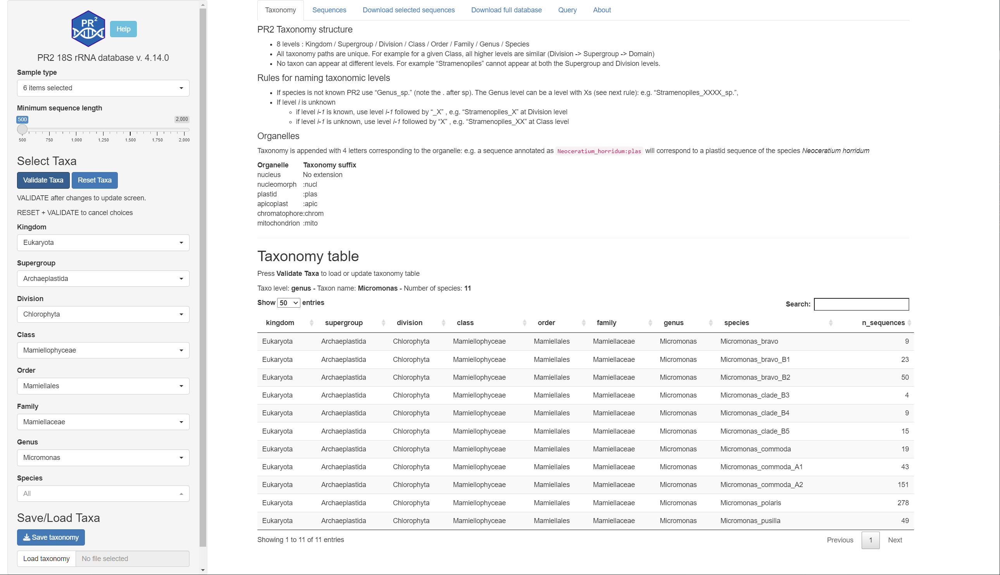

Shiny PR2
vignette-shiny-presentation.RmdPR2 Shiny application
Note: This application is not yet available (probably late December 2022).
Here is a short description of the different panels
Taxonomy
Listing of taxonomy used for PR2 with number of sequences for each species
- First Select Taxa on the left Menu by navigating the menu
- Once you have selected the taxonomy press VALIDATE TAXA and you should see the table of taxons
- To reset the taxonomy press RESET TAXA followed by VALIDATE TAXA.
- You can save and reload your favorite taxa on the bottom left of the
screen

Sequences
Listing of PR2 sequences for the selected taxa with the following information provided.
You can filter on the left menu the sequences by:
- Length
- Type of samples: corresponds to sample origin as detailed in the GenBank record or the original paper
| Type | Origin | Sequence # |
|---|---|---|
| culture | Well-defined culture | 38703 |
| environmental | e.g. oceanic water or soil | 81808 |
| isolate | Organism isolated for example by pipetting but not in culture | 26774 |
| specimen | e.g. from a plant species | 22218 |
| unknown | no information available | 28098 |
The following information is provided:
- PR2 accession number
- PR2 species assignement
- Sequence length
- Sample type as annotated by PR2
- Definition and Taxonomy provided by GenBank
Download selected sequences
Download PR2 sequences and their metadata for the selected taxa
You can filter on the left menu the sequences by: * Length * Type of samples
The description of the files is provided on the page.